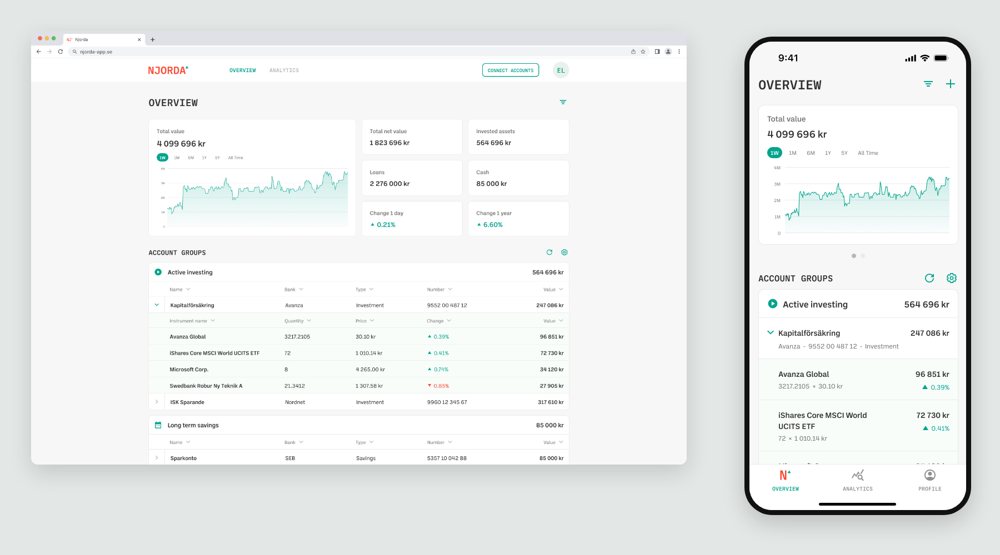
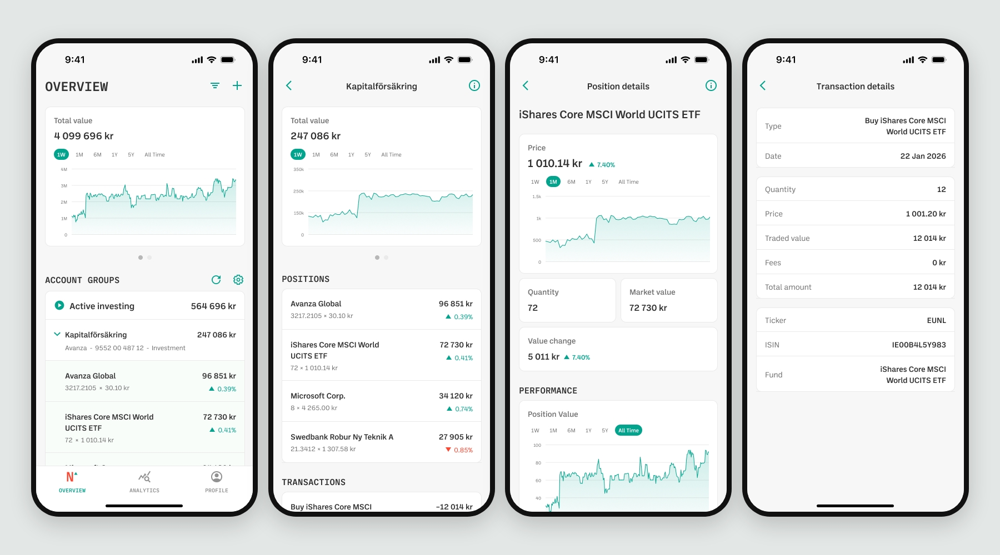
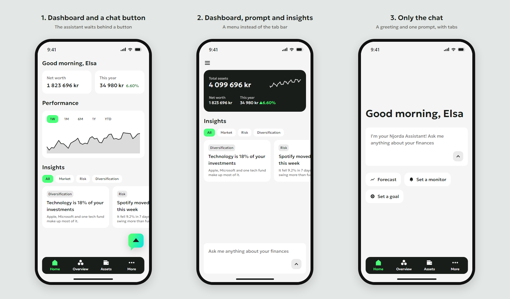
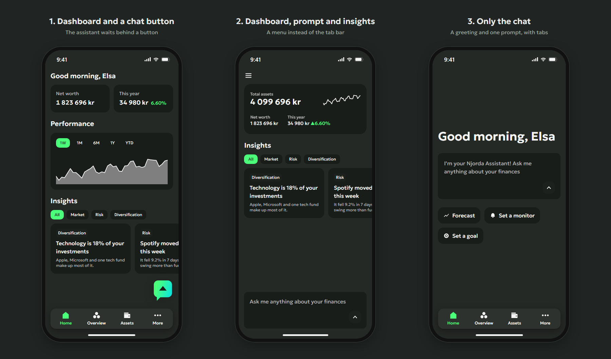

Case study, Njorda app
From a dashboard to an assistant
Njorda is a Swedish personal finance app. It brings together what a person owns and owes, from investments and savings to loans and property, connected read-only through BankID from the banks they already use. An AI assistant helps make sense of it. Three generations of the app, from a data-heavy dashboard to an AI-first home and a design system developers can click through.
- Role
- Product designer: research, flows, UI, design system, prototypes, design QA
- Team
- 2 co-founders (product, tech), 5 developers, 1 QA
- Platforms
- iOS, Android and web, light and dark themes
- Timeline
- 2023 to 2026
The users
Everyday savers, not professional investors. Most open the app briefly, often on the go, to check how their money is doing. Financial knowledge varies a lot, and some people use large system text.
So every screen has to be readable at a glance, and every number has to earn its place.
Redesign, 2023 to 2024
Bringing order to a growing product
The problem
When I took over the app, it worked, but it had grown one feature at a time and was hard to read:
- Dated visuals that no longer matched the company’s brand.
- Inconsistency: screens used different fonts, spacing and card styles, so the app felt stitched together.
- Overloaded screens: too many figures at once, and the most important one didn’t stand out.
- Numbers without context: changes with no period attached, and a risk level with nothing to compare it to.
- Only part of the picture: investments only, with no property or loans, so net worth was out of reach.
- Hard to explore: filters that crowded the screen, long lists with no grouping, and charts that were hard to read.
- Goals that felt awkward: tied to account groups and expected return rather than to something people save for.
What I did
- Applied the new brand across the app and built a component library, so every screen used the same type, spacing and cards.
- Simplified the main screens. Overview leads with total value and a performance chart, then a small set of key-figure cards. Details move one level down.
- Put every change in a period. Charts got a period picker, from one week to all time, so a percentage always says since when.
- Showed what people own and what they owe. Net value, loans and cash became key figures next to invested assets.
- Gave the data a clear hierarchy instead of long flat lists: Overview, then Account, then Position, then Transaction. People can go as deep as they want, but they never start deep.
- Moved filtering out of the way: by account group and bank, in a side panel on the web and a full-screen sheet on mobile, instead of filters crowding the top of the screen.
- One logic, two layouts. Web and mobile share structure and features. On the web, accounts and positions are tables; on mobile, they become cards that fit a phone.
The redesigned app, 2023 to 2024
Solved in this version
- One visual system across every screen
- Total value first, details one level down
- Every change with its period
- Loans and cash next to investments
- A clear path from Overview to a single transaction
- The same logic on web and mobile
Left for the next version
- Goals people can relate to: an amount and a date
- Risk compared with the market
- Property and other assets beyond investments
- Answers in plain words instead of more numbers


AI assistant, 2025 to 2026
Making AI the front door
The brief
The product leads wanted to bring the app’s analytics and an AI assistant together, and the product promise came down to three jobs:
- See everything in one place. Investments, savings and loans from the banks people already use, without logging in everywhere.
- Understand how it’s going, without guessing. What drives the result, what holds it back, and how much risk it carries.
- Follow a plan. Goals to aim for, and monitors that say when something needs attention.
Every screen in this chapter serves one of those jobs. Analytics became simpler, made for private investors rather than financial advisors, and the app moved to a new brand: bright green and black, and a new typeface.
The key question: where does the AI live?
Adding a chat to an app is easy. Deciding what the app is when the chat arrives is not. I explored three home page concepts:
- Classic dashboard and a chat button. The familiar Overview, with the assistant behind a button in the corner. The risk: a floating chat button reads as customer support, so people may never try it.
- Dashboard, AI prompt and insights. A mini dashboard, the prompt and topic insights to get started. The risk: three things compete for attention on a small screen.
- Only the chat. A greeting and one prompt, nothing else, with the usual tab bar. The risk: an empty box is hard to start with, so quick actions offer ready-made questions.


We chose the third concept. A button in the corner hides the assistant, and a mixed home makes it compete with the numbers, so in both cases people would keep using the app the old way. A home with only the chat makes asking the first thing you see, and quick actions give a place to start. The numbers don’t get lost: Overview became its own page in the tab bar, one tap away.
The app, in the order people meet it
Sign in, connect banks, ask, then look closer. Scrolling goes through each prototype state by state; every screen can also be clicked. The customer and all the figures are made up.
This is a real prototype.
Click anything inside the screen. Scrolling walks through every state; the arrows on the right jump between screens.
Design system, 2026
From Figma to a prototype developers can click
The problem
Every screen was designed in Figma with its states: errors, empty screens, loading. But a static file shows how a screen looks, not how it behaves: states sat in separate frames, and wiring them into a clickable Figma prototype took a long time. Small mismatches often surfaced only in design review, after the build.
From screens to a prototype
With Claude Code the Figma screens became one clickable prototype of the whole app in HTML and CSS: every screen connected, every state included. Each state has its own link and notes on the decisions behind it, ready to drop into a task.
A design system on one page
The components used across the screens became the design system, built alongside the prototype in HTML and CSS. Developers got it as one reference page: every component with its states and rules for when to use it, light and dark, plus the tokens as files to import. No digging through a Figma file to find the right component.
What changed for developers
- Fewer questions. A state you can click doesn’t need explaining.
- Nothing hides. All states of a screen are one click apart, not spread across frames.
- Faster review. The prototype and the build share the same values, so differences are quick to spot and settle.
What the journey taught me
- Fewer numbers, better numbers. Each generation of the app showed less at once and explained more.
- Coming back to my own designs was the best feedback. Living with them showed which decisions held up and which needed another try.
- Asking first doesn’t mean asking only. The home opens with the assistant, but every figure still has its own page, so people choose between asking and looking.
- A prototype in code is a better spec. When every state is clickable and linkable, design decisions don’t get lost between Figma and the build.
Let’s talk
Open to product design roles, remote or in Poznań.